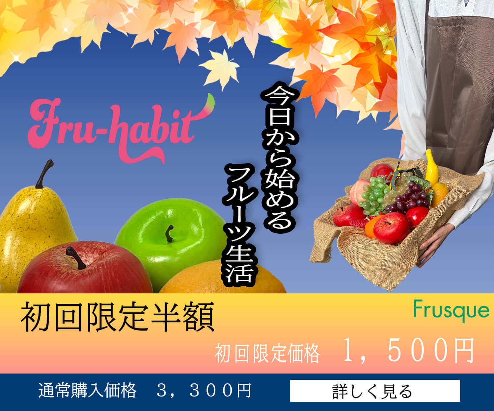

概要
株式会社フルスクが新たに開始するフルーツの定期便サービス「Fru-habit」の新販売告知バナーを制作
バナーの掲載期間は9月中旬の1～2週間なので、秋の季節感を表現したイメージしました。
目的
「初回送料無料・お試しセット（1,500円）」への申し込みを促し、お試し会員3,000名の獲得を目指す。
申込時に次回以降の定期便サブスクリプション登録へ自然に導く。 Fru-habit、Frusqueの認知度向上と、ユーザーの印象形成。
ターゲット
主なターゲットは「健康志向で、手軽に、お得に新鮮なフルーツを日常的に取り入れたい」と考えている層
20代後半〜40代の女性
成果物
リーダーボード
ミディアムレクタングルボード

仕事やプライベートで多忙な毎日を送る20～30代の女性やカップルをメインターゲットにしています。
「今日から始めるフルーツ生活」という新しい習慣を提案し、日々の生活に小さな幸せを届ける体験を表現しています。
夜、仕事から帰宅した後に、彩り豊かなフルーツで心身ともに癒されるリラックスタイムをお届けするイメージしました。
担当
企画立案(3h)、構成案、スチール撮影（5h/ チーム撮影）、デザイン（5h）、素材加工(5h)
使用ツール
Photoshop
使用機器
Android携帯（Xperia）、i-phone